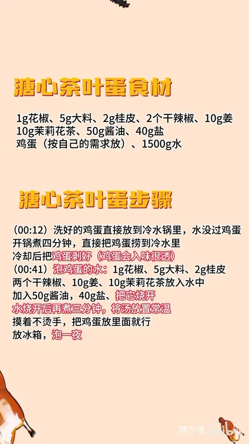

溏心茶叶蛋
隋卞一做。鸡蛋冷水下锅、水没过蛋，开锅只煮 4 分钟就投冷水，剥壳后泡进 1500g 水加 50g 酱油、40g 盐、10g 茉莉花茶熬的卤汤，汤放凉再泡，冷藏一夜，蛋白入味蛋黄仍是溏心。
原视频：https://www.bilibili.com/video/BV1hnSdY6E1x
食材
鸡蛋、花椒、大料 等 10 样
| 类别 | 用料 | 用量 |
|---|---|---|
| 主料 | 鸡蛋 | 按自己的需求放 |
| 卤汤 | 花椒 | 1g |
| 卤汤 | 大料 | 5g |
| 卤汤 | 桂皮 | 2g |
| 卤汤 | 干辣椒 | 2 个 |
| 卤汤 | 姜 | 10g |
| 卤汤 | 茉莉花茶 | 10g |
| 卤汤 | 酱油 | 50g |
| 卤汤 | 盐 | 40g |
| 卤汤 | 水 | 1500g |
步骤
- 煮蛋：洗好的鸡蛋直接放进冷水锅里，水没过鸡蛋，开锅后煮 4 分钟，立刻把鸡蛋捞到冷水里。
- 剥壳：鸡蛋在冷水里完全冷却后剥壳，剥得干净才入味透彻。
- 熬卤汤：1g 花椒、5g 大料、2g 桂皮、2 个干辣椒、10g 姜、10g 茉莉花茶放进 1500g 水里，加 50g 酱油、40g 盐，烧开后再煮 3 分钟。
- 放凉：把卤汤放至常温，摸着不烫手。
- 浸泡：鸡蛋放进凉卤汤里，连汤一起放冰箱泡一夜即可。
小贴士
- 鸡蛋只能煮 4 分钟，煮久了蛋黄就全熟，没有溏心了。
- 卤汤一定要凉到不烫手再下蛋，否则蛋黄会继续受热变硬。
讲解要点
难度：★★☆☆☆（新手可做，难点是煮蛋掐时间——多煮一分钟溏心就没了）
为什么这么做
- 冷水下锅、水没过蛋：受热均匀，计时从开锅算，4 分钟正好是溏心的临界点。
- 到点立刻投冷水：一是马上止住余温继续加热蛋黄，二是蛋壳好剥。
- 剥了壳再泡：带壳泡、壳上有纹路的那种，味道进不去；剥壳后蛋白直接接触卤汤，入味才透。
- 香料只用花椒、大料、桂皮加两个干辣椒：家常三样就够，香料多了会盖掉茶香。
- 茉莉花茶量放大：茉莉花茶的清香是这道蛋的主味，量少了就只是普通卤蛋。
- 卤汤烧开煮 3 分钟就关火、放凉到不烫手：热汤下蛋，蛋黄会继续受热变硬，溏心就没了。
- 冷藏泡一夜：温度低味道一样进得透，还不会把蛋黄泡老。
容易翻车
- 煮过 4 分钟，蛋黄凝固，变成普通茶叶蛋。
- 卤汤没放凉就下蛋，蛋黄被烫硬。
- 剥壳剥破、蛋白露洞，入味不均匀也不好看。
- 泡的时间不够，只有表面有味。
热评补充
- 有观众给出更细的时间：开水下锅 6 分 40 秒，最里面还是流心，外层蛋黄带一层啫喱感，层次更丰富；6 分 50 秒则整体呈啫喱状，没有沙沙的口感。
原片尾卡

原片文案
AI 字幕校准稿
咱这个心真的留得特别好，不光是溏心，而且味道浸得也非常的透。这可能是你们在互联网上能找到的茶叶蛋最简单的做法，而且还是溏心的。来吧，溏心茶叶蛋。
洗好的鸡蛋直接放在冷水锅里边，水没过鸡蛋，点火，开锅煮 4 分钟就行了。时间到了，直接把鸡蛋捞到冷水里边。
现在这一步很重要：剥鸡蛋。为什么鸡蛋要剥呢？像你们平常吃那种剥完以后带纹路的，它入味不会入得很透，这样剥了壳入得比较透一点。
我们调一个泡鸡蛋的水。其实主要的香料只有三种：花椒、大料、桂皮，家里边应该经常有。同时我这个方子茶叶的量稍微大一点，我选用的是茉莉花茶，会更突出茶叶的香味。
放里边了：大料、桂皮、两个干辣椒、花椒、几片姜，茉莉花茶里边加酱油、加盐，然后把它烧开。水烧开后再煮 3 分钟，烧开就关火，放置常温，摸着这个汤不烫手。
然后把鸡蛋泡里边就行了，赶紧给它放冰箱泡一夜。
其实已经是第二天了。我来给你们切一下，看看咋样。不光是溏心，而且味道浸得也非常的透——我原来以为低温泡它味道进不去，它味道进得还挺透的，盐味够。而且咱这个心流得特别好，一进嘴巴那个心唰就流出来了。
咱这个香料味不是那么重，但是茉莉花的味很香，本来就带着那种清香味，全在鸡蛋里面，挺好吃的。你们吃不了这个溏心，可以再稍微多煮一会儿。不过还是建议大家吃溏心的，入口的感觉真的不一样，煮实心的那个真不好咽。
大家在家试一下吧，这个真的是很简单很简单的菜了。